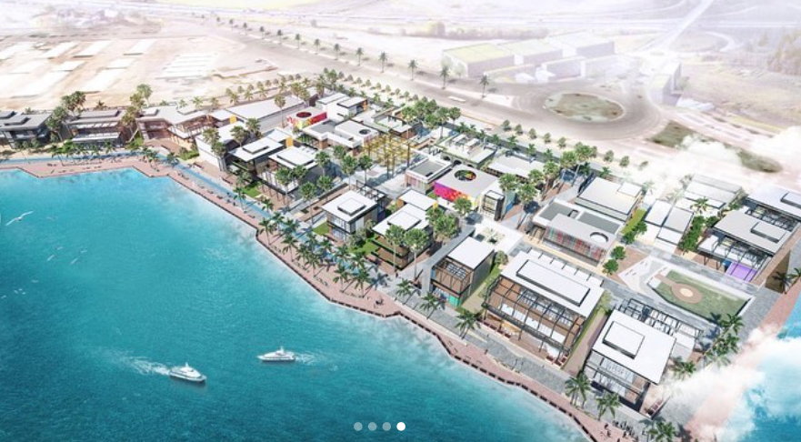
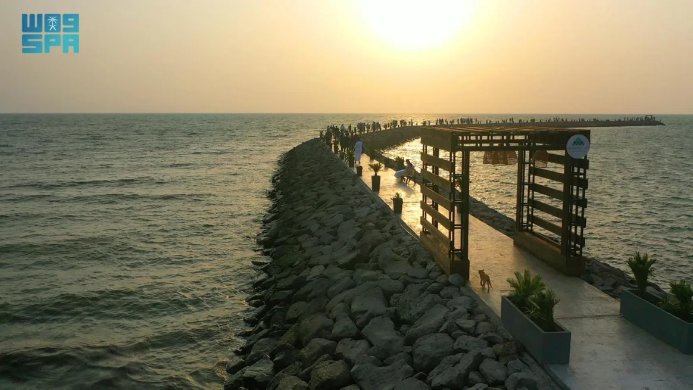
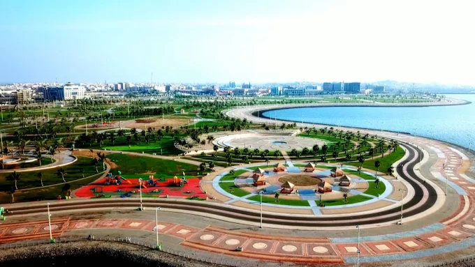
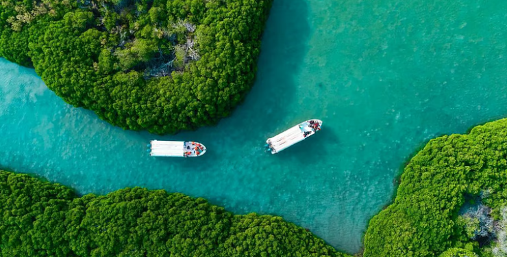
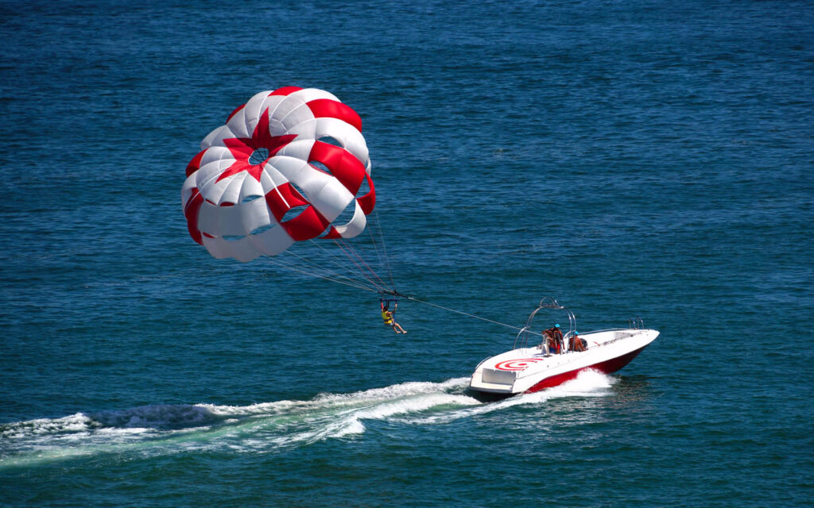

البولي فارد

واجهة بحرية عصرية تضم مساحات للمشي والجلوس ومطاعم ومقاهي بإطلالات على البحر الأحمر. ويزداد جمال المكان عند الغروب، مما يجعله مناسبًا للتنزه وتناول الطعام والاستمتاع بالأجواء البحرية.
الكورنيش الجنوبي

واجهة بحرية هادئة تتميز برماله البيضاء الناعمة، ومياهه الصافية، مما يجعله وجهة مميزة للاستجمام والهدوءو بإطلالتها على البحر . مكان مناسب للمشي والاسترخاء وقضاء وقت ممتع مع العائلة أمام منظر الغروب .
ممر السعادة

ممر ساحلي هادئ على الكورنيش الشمالي، يجمع بين المشي وإطلالة البحر الأحمر. ويُعد من الأماكن المناسبة للاستمتاع بالغروب ونسيم البحر في أجواء بسيطة ومريحة.
الواجهة البحرية

هي واجهة بحرية واسعة تجمع بين البحر والمساحات الخضراء والمطاعم والمقاهي والمرافق الترفيهية. وتوفر مساحات للمشي والاسترخاء والاستمتاع بغروب الشمس في أجواء حيوية على ساحل البحر الأحمر
غابة القندل

من أجمل التجارب الطبيعية في جزر فرسان؛ حيث تنمو أشجار القندل وسط مياه البحر المالحة، فتتشكل ممرات مائية فريدة يمكن استكشافها بالقوارب. كما تمنح الغابة فرصة لمشاهدة الطيور والحياة البحرية في بيئة طبيعية هادئة
شاطئ الهيئة الملكية

شاطئ يتميز بالرمال البيضاء والمياه الصافية والمرافق المنظمة، مع أماكن للجلوس وممرات للمشي ومناطق ترفيهية للأطفال. خيار مناسب لمن يبحث عن يوم هادئ على البحر.
مرسى الأحلام

وجهة للأنشطة البحرية والمغامرات، تتيح للزوار خوض جولات بالقوارب والاستمتاع بالرياضات المائية، إضافة إلى تجربة الطيران المظلي فوق البحر لمن يبحث عن إطلالة مختلفة ومليئة بالإثارة.